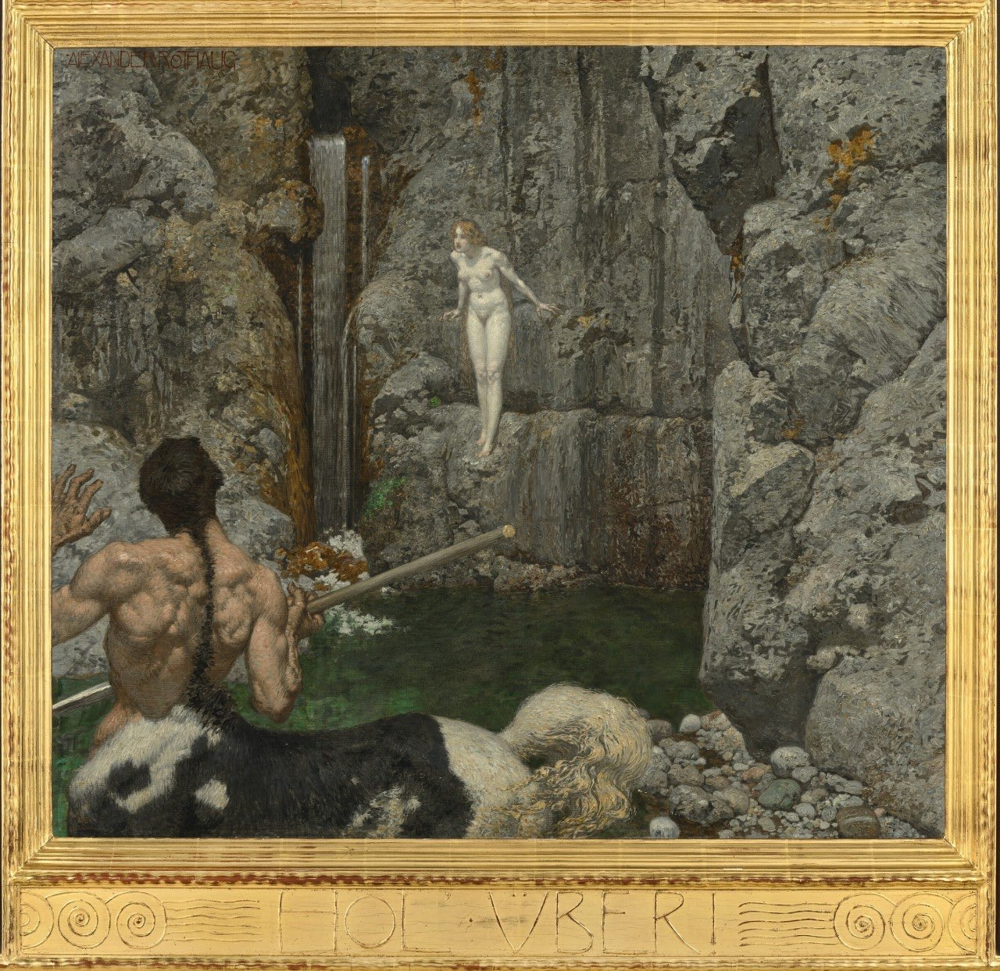
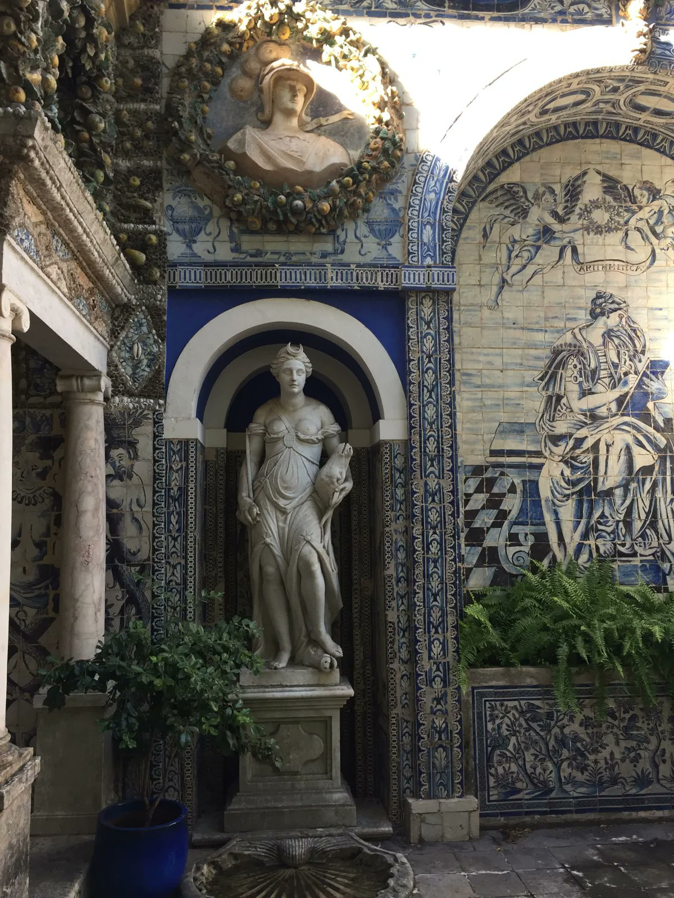
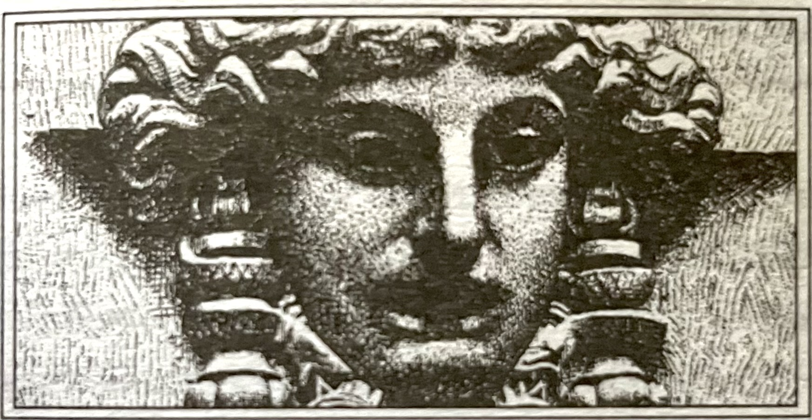
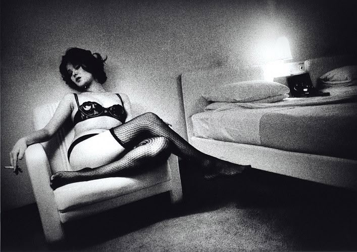
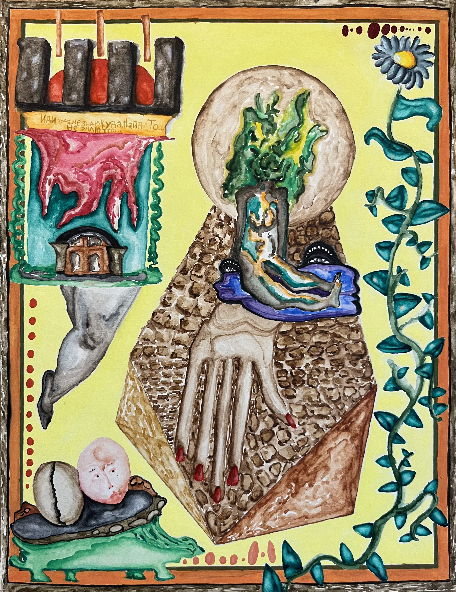
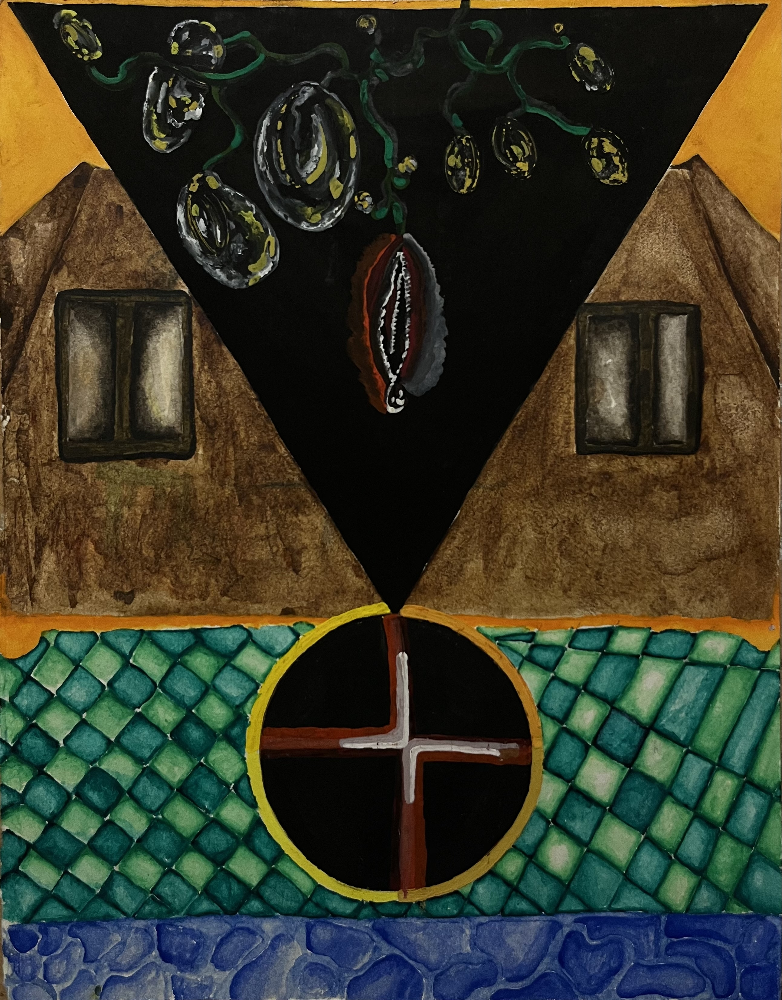
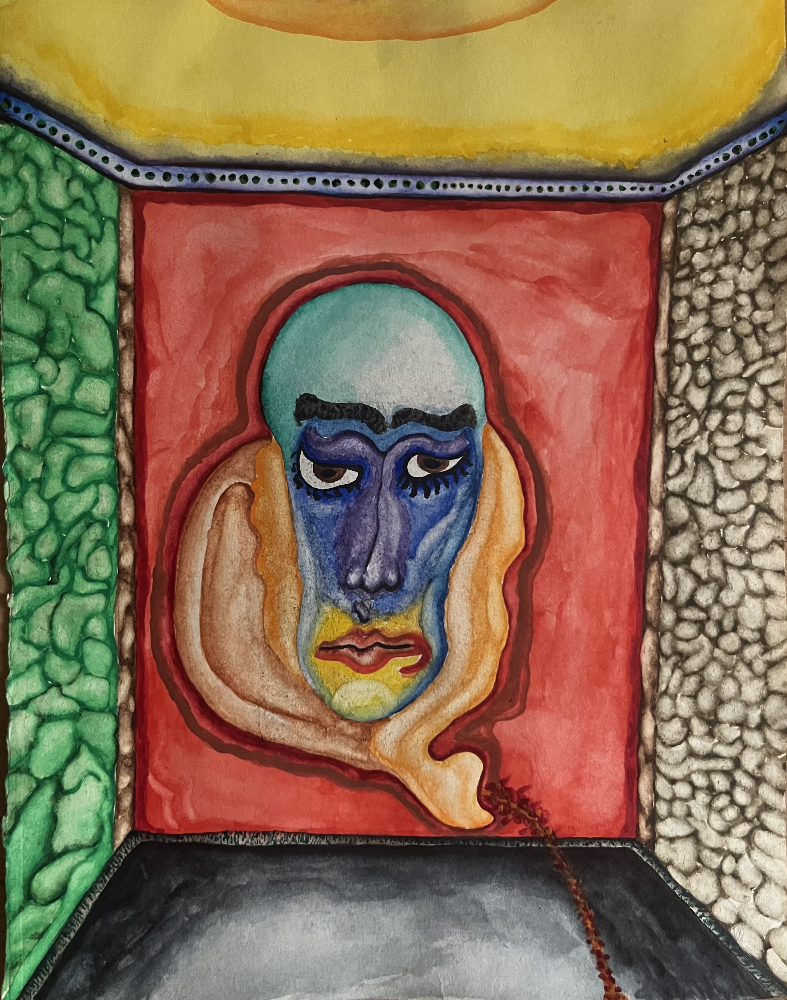
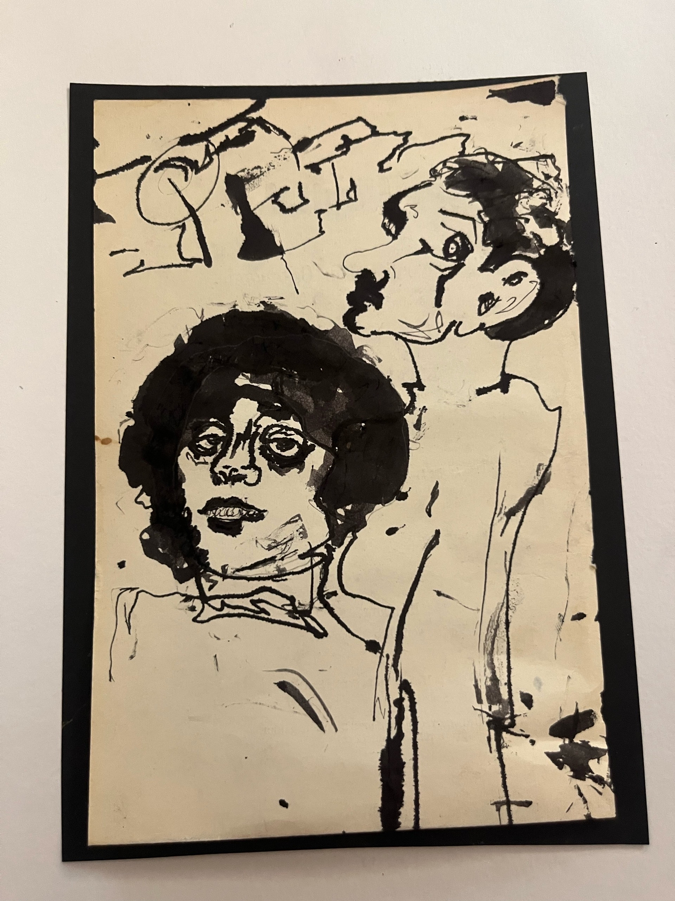

В стихии воздуха есть покрывающая шлейф-пленка. Скорее всего, это было известно и древним, но одна такая интуиция многое проясняет. Пленка эта заточена, как лезвие, и вместе с тем прозрачна, чуть мутновата два ее конца смыкаются в пупе земли. Метафорой здесь может послужить-с завязанное декольте посреди двух сферических чаш, которые, впрочем, зовутся ракушками, спиралевидные наутилусы, да и весь лунарный комплекс. Если вдруг птица, ласточка или воробей вьет гнездо под крышей, прямо над вашей головой, остерегайтесь полной луны, если вы не вполне готовы. Тонкость векторной направленности стрелы Амура эфирна а это, в свою очередь, говорит о птичьих яйцах, которые суть три столпа и подпорки всего проявленного, а именно не привычного сущего, т.е того, что не меняет своей твердости в связи со спекуляциями. В лучшем случае на вас готовится охота они, менады луны, закрутят вас в пленку, и от боли в ногах, не переставая танцевать, вы скользнете и расотождествитесь с собою, прогоняя себя от себя по оси двух нитей, уходящих в узел пупа земли. После вы, при должном усердии и с их помощью, возгоните свой пепел, оставшийся от вас и от души, и от тела, и от двойничьего, в сферу огня, то есть в ту сферу, где изначально и было ваше подлинное пребывание, устраняя тем самым дуализм влажного пути а после трансформации превратитесь в конденсат. Тогда, поймав себя в этих ухищрениях, вы увидите точку сечения, то есть вечного возвращения.
Бумага одного художника это не та бумага, свойственная другому. Прошу заметить, речь идет не о фактуре, бренде, плотности или цвете. Если вглядеться в кадр из кинофильма с участием Веры Холодной, можно сказать обывательским языком (языком университетской номенклатуры) жанровая специфика, свойственная тому времени, мелодраматически-ноктюрническая салонная резвость… Но ничего это ни о кадре, ни о фильме, ни о чем не говорит путаная навигация или… говоря точнее, трудности перевода одной географической карты на другую, иноразмерную, что, соответственно, заводит не совсем туда. Теперь поглядим иначе, достаточно кадра.. героиня, запыхавшись, растерянно-собранно, изнеможденно облокотилась пепельной головой о дерево. Ее вернувшийся после взгляда через плечо профиль отражает исчерпывающе всю специфику белого цвета как такового и не только, то есть его оксюморон and антиномичность, позитивную парадоксальность по ту сторону законов чистого разума, логики, рацио, логоса и т. д., т. е. чисто фонарно-патриархальных гаечных ключей. Ошибочно полагать, как это делал и Аристотель, и феноменологи, что цвет это акциденция, он всегда на чем-то, а как такового его нет, или, точнее, нечто может быть во что-то окрашено. Скорее верно так цвет - это уже что-то, неразрывная, тонкая, субстанциальная категория вне захвата, посему она и ускользает, и правильно делает. Белый это бумага, будь она например пожелтевшей она сочится, изнурительно жаждет ласки, пылает неустанной любовию / Белизна временно приняла форму волос, лица и платья, чтобы обнаружить себя.

Женское тело воздействует магически, золото притягивает безумие, а солнце сжигает дураков. Смерть кощея бессмертного спрятана на конце иглы, которая находится в яйце, яйцо - в утке, утка - в зайце, заяц закован в железный сундук, а сам сундук висит на ветвях векового дуба, растущего в тридевятом царстве, в тридесятом государстве, за тридевять земель на море на окияне, на острове Буяне. Хвосты, они же вывернутые электрические провода на столбах, внушительно убивают голубей. Это те птицы, отличные от ворон или чаек от долгого сидения на проводах голуби больше не могут садиться на здания для них все становится хвостом. Оттого они клюют именно в пол, и переезжают их из-за того, что они думают, будто этот электрический хвост их ветка и внизу. А хвост устроен по принципу циклов, которые в урбанистическом пространстве нарушены. Голуби чувствуют канализацию внизу, посему полагают (и верно) что там их дом, но машина переезжает их быстрее. Вороны гораздо умнее, а чайки или воробьи чаще под крышей, я их редкенько слышу там уже два яйца. Одного социального взаимодействия, сквознякового пролета меж мирами людей, достаточно на год уединения, дабы вновь нарастить скорлупу, ведь турбуленция мышц сжигает холодцовые спазмы.
Полное признание превосходства изначальной пелазгической космической ночи, сновидений, беспредельно-безбрежного, интуиции над рациональным во всех его проявлениях. Абсолютная власть космоцентризма и вечного возвращения. Тортола Валенсия, Belle Époque эпоха испанского декаданса, к сожалению, неизвестна сейчас. По сравнению с тем, что известно (а это по преимуществу кабинетные, безопасные, гнусавые лектора, работающие на статус-кво) испанская прекрасная эпоха совершенно не переведена на русский и никак не освещена. Так, по сравнению с ней, хотя французский сплин имеет свое место, и было бы ошибочно просто сравнивать сообразно тому что лучше не говоря о том, что танцовщиц таких уже нет разве что предпринимательницы, а потенциальные поклонники сакрального служения «оперились» в прагматичных, рациональных…… к слову, не буду о вязком. Горячая кровь испанцев и испанок наиболее сорванно прошелестела хворостинкой. Трудно себе представить вообще возможность того, кто способен то ли застрелиться, то ли разориться. Это неразумно, наваждённо, глупо, нецелесообразно, неэкономно… да и вообще незаконно. Мир признаёт функционально-внешнее, наиболее узколобое проявление чего бы то ни было все тонкие миры отвергаются, тонкость вообще молниеносно купируется «трезвым» взглядом самого смотрящего. /- Ни разу еще не встречал я женщины, от которой хотел бы иметь детей, кроме той женщины, которую я люблю: ибо я люблю тебя, о Вечность! Ибо я люблю тебя, о Вечность!-/
В их волосах - оливковых - разорванные нити, В них пепел прерий, яд и терпкость темной соли. Смуглянками зовут их дети лисьи. Они ведут сквозь анфилады суеверий К триумфу высшей, запредельной боли.
Квазирелигиозная ссср так или иначе повлияла на христианизацию. В России никогда не было чистого, дистиллированного христианства оно по приемуществу носило мощный языческий, племенной оттенок до осевого времени. Можно увидеть параллели с тем, как циклическое представление о времени было убрано к середине I тысячелетия до н. э. империями, что, как можно предположить, повлияло на сдвиг возникновение мировых религий и возможность их существования после нивелировки местных, локальных божеств, привнесения и/или проникновения очерка трансцендентного, его выноса. Локальные этнографические особенности русского православия были перемолоты советской унификацией. На выходе особенно к концу советского периода, в 70-80 годы, когда в церковь пошла интеллигенция возникло гораздо более дистиллированное, интеллектуальное, текстовое и действительно мировое по своему духу мистическое христианство (Здесь я имею ввиду подлинное т.е мистическое христианство считающееся еретическим для слуг Яхве/ Т.е такие как - Якоб Беме, Экхарт e.t.c . В принципе, никаких противоречий нет просто прокатился самодовлеющий бульдозер, вторя первым империям, и положительно-парадоксальным образом дал свет Абсолютно Иному/Тоски по иному берегу/Непостижимому/Абсолюту данному нам в его отсутствии/Герметико-Алхимическим панантеистическим мировоззрениям. К слову, это то, что имел в виду и Илья Масодов, что дает еще больше положений к утверждению анонимности, и роли раннехристианских псевдоэпиграфистах прослеживаемых в его образе. Также ажитаторы первых революционеров, особенно крыло Луначарского, Богданова и Горького, прекрасно понимала, что они делают, возвращая иудео-христианству первохристианскую, катакомбную игривость

В ленивой сонливости из обезвоженных кондиционеров плюются каплями голодного пота из резво вращающихся в полуденном салатово-резком зное страдающие вентиля. Они жадненько наползают друг на дружку, ревниво уворачиваясь обступая ветра, грохаются стеклянной дробью на алюминиевые головы карнизов, стремясь со-слоиться. Солнце, неразборчивое в своей щекотке, кажется <…им…> нависшей мельтешащей лампочкой; посмаркиваются ушами втулчатых труб, поэтому, когда я говорю в изморось, она же, оседая на разжиженной земле, эфирно вбирает в себя мои смыслы. Или снег таким образом можно заговорить, а потом он летит своей дорогой это более интенсивный контакт, у людей слишком много своего. Ноооет... Нооооет... Ноет бело-черствое покрывало на полевых лбах. Подходил я разок на цыпочках сзади… Думал долго, что сказать ей, точнее - как, ведь то, что хотел сказать, имело уже выплывать по нёбу с первым липким причмокиванием. Сними свои шпильно-красные туфли! Окинь бирюзовым ногтем окружающий мир за класс первый, а вот когда ты, деточка, увидишь гангрену знамен, завопи не стесняясь - «Я ЛЮБЛЮ СОВ, ЖУРАВЛЕЙ И ВОРОН!!!» Я им говорю - «Выйди и Зайди», но обитатели одних заброшенных кулуаров не совсем внимают. Возвратиться, дабы попасть домой... Полагаю, у них, как и на так называемом «яву», агрессивно царствует одномирие, одножизнинье, которое они из-за инверсии считают действительностью. Отсюда надобно смотреть на всё в «негативе», имея красную комнату, дабы вывести полное изображение, убедившись. Получается, что значит - жизнь одна…? Британский сенсуализм 17–18 веков основательно так набаламутил людям рожи, предоставив грядущий ассортимент их бездонных буржуек с громоотводами на пяти пальцах. Запппылывшие личище, коренасто-упругие щеки, шея, неуклюже взбитое брюхо с маленькой, вздымающейся по сторонам у солнечного сплетения, гинекомастией, что рассасывается довлеющим фоном силуэта щегла, идущего улыбчиво, переминаясь, а в солоноватых руках, сладко запотевших, два многоразовых трехлитровых бидона с молоком, на горлышке которых язвят встречным воздухом коричневые нитки, покусывая грубые костяшки. Законы физики это и есть мистика, только убогая, в принципе концепция законов природы это мистический и теологический довод. Вопрос в иерархии ценностей, перед которыми телемиты, скуля, пасуют, не находя смелости заявить, что это полный бред и что материя не имеет активной формы в виде законов притяжения (которые являются аксиомами), как и вся механика, которую они принимают, будучи зависимыми от шелухи нью-эйджа, при этом акцентируют внимание на банальных трюизмах релятивизма, которым вес авторитета придала квантавая физика, наука тенденциозна даже если противоречит себе, ее истоки в ее незавершенности которой кует себе авторитет, об этом хорошо пиcал 21 летний Карло Микельштедтер еще 6 лет назад, в 1910 - Да, наука больше не делает догматических утверждений. Время прошло, когда, чтобы развиваться, она насильственно* ломала руки тем, кто умел обнять её с большей широтой. Её жизнь больше не является очередой исключений и бунтов. * Я говорю «насильственно», потому что нет иного способа для утверждения новой теории, кроме как вовлекать всё больше и больше людей в контакт с особым качеством опыта, которое могло бы её продемонстрировать. Но это вечное признание недостаточности — ничто иное как высшее ухищрение, чтобы обрести большую уверенность в своём будущем. Теперь она утверждает соотношение κατά — «в соответствии с» этими обстоятельствами времени и места, но также добавляет κατά — «в соответствии с» степенью наших исследований. Она отказывается от своей собственной persona, чтобы остался метод, право на труд, ибоэто и есть жизненный пункт, причина, абсолют: бог, из которого каждый черпает право на существование, то есть право унизиться до позорной жизни, до тупого труда, согнуть спину в тёмном углу, лишь бы не встретиться лицом к лицу с жизнью и не увидеть смерть. Риторика науки — это утверждение того труда, который есть не что иное, как отсылка к недостаточности вещей так, будто она достаточна для требования убеждения. Однако, будучи причиной иррационального, она воспроизводит иррациональное способами и словами, которые имеют право на существование лишь на подлинном пути убеждения. "В вырождении знающей persona, через переосмысление знания, наука с её неисчерпаемым материалом и методом, основанным на близости малых, конечных целей, с её познавательным самоположением, что объективно испытывает, и вновь, и вновь повторяет одну и ту же минимальную реакцию организма (которая не только не требует, но и не терпит всей persona) с её нуждой в специализации, укоренилась в самой глубине человеческой слабости и даровала риторике знания прочную конституцию на всё последующее время. В бесконечной совокупности того, чего они не видят, учёные с упорством экспериментатора несут тусклый свет своего мерклого фонаря, чтобы понемногу выуживать из одновременности или последовательности данного ряда связей предположение о причинности: скромную гипотезу, что должна стать теорией или законом. Законом чего? Законом того, что при данном совпадении данных связей данная вещь происходит в данный момент. Но как она дана и зачем? — «Потому что…» — отвечают они, пытаясь вывести новый закон с помощью новых экспериментов. И на каждый вопрос «зачем?» они отвечают «потому что», вымучивая шаг за шагом путь бесконечной причинности. Это рассказ о труде, повторяющем все предыдущие шаги, чтобы прибавить ещё один крошечный. Правильно, что евреи ходили вокруг Иерихона, не атакуя его, пока стены не рухнули, но у евреев, тогда, был бог, который не обманывал. У людей науки — бог филопсихия; Но из неясных крайностей своих выводов, каждый посылает в центр познанные «истины», ибо как бычеловек ни отходил от центра, его жизнь сама по себе является разветвлением системы, а «истины», приходящие таким образом, уже определены и обозначены так, чтобы стать частью науки. А на первый и основополагающий вопрос «для чего?» ответ притворяется обещанием бесконечных причин: «законы материи, такие, какими они открыты, и такие, какими они будут открыты в ходе неустанного, объективного исследования»; точно так же, всякий раз, когда прерывается череда «потому что», на крайнюю точку накладывается κάλλωπισμα οὐ ῥῆνης — «украшение тьмы», чтобы она служила залогом бесконечных «потому что», на которые наука должна дать ответ. Но если «материя» и облако корреляций — это бесконечность οὗ οὐδὲν ἔξω — «вне которой всегда что-то есть», то путь науки — это бесконечность οὗ ἀεὶ τι ἔξω — «за пределами которой ничего нет»; ведь в каждой точке она должна быть конечной в своих утверждениях. Поскольку она будет конечной в бесконечном, она бесконечна в каждом своём предположении конечности. «Но она не претендует на конечность, а напротив, она исповедует идею бесконечного пути и потому каждый учёный в своей работе совершенно честен». Так возмущенно протестуют учёные и вместе с ними не малая доля обывателей. Но что толку? Предпосылка самой работы нечестна; достаточность конечной работы нечестна в каждой точке, даже если она идёт по пути, провозглашённому бесконечным, чтобы удовлетворить требование убеждения (именно по этой причине — она нечестна). Всё, что учёный указывает как часть науки, в бесконечной корреляции того, что лишено бытия, он всегда укажет unredliches (то о чем нельзя говорить; лживый)*, то есть нечто, что, будучи неадекватным требованию, нечестно произносить. И из-за покрова своих καλλωπίσματα — «украшений», которые суть «материя», «закон», «целесообразность», «жизненный принцип» и прочее, учёный всегда будет взывать с тем же способом — просьбой, что он нарушил и обесценил своей жизнью, ибо в экспериментальной деятельности он притворяется, будто живёт достаточной жизнью. * Если я спрошу: «Что такое хлеб?» — и отвечу: «Хлеб — это то, что насыщает меня», я дам ответ, верный для моего голода, для продолжения моей жизни. Но этот ответ понятен без слов. Я испытываю голод, беру хлеб, ем и умолкаю. Но если я спрашиваю, я испытываю голод не по хлебу, а по чему-то, что может насытить мой голод на более продолжительный срок, чем кусок хлеба. И для такого голода ответ, который лишь намекает на насыщение, является недостаточным. Достаточным для этого голода был бы ответ, который скажет мне, для чего «хорошего» насыщает меня хлеб, ради какой «хорошей» цели продолжается моя жизнь, чтобы и хлеб обрёл цель, соразмерную его существованию. Своим вопросом я прошу у хлеба вкуса иного, чем тот, что сладок моему желудку. И если кто-то будет притворяться, будто знает достаточно, утверждая, что хлеб насыщает меня, потому что содержит такие-то вещества, а они содержатся в нём потому, что он сделан из муки, а мука получается из таких-то зёрен, а зёрна... Он сможет сказать многое, но будет говорить то, что говорить не следует, он скажет то, что есть unredliches.. ------ / Посему ! - Пока кто-то из них не признает внутри себя, что все это полный бред, и не будет заниматься магией и мистикой, действительно видя мир через панантеистическую картину, они крупные шулеры, и ничем от Блаватской, которую они же и презирают не отличаются.

Чувствую добронравный надрыв Якоба Бёме есть в нем что-то притягательно-симпатическое. Если настолько глубоко, как я прожить те улицы, которых никогда не видел, но по которым мы с ним ходили, тот запах именно того несравнимого события времени, который именно там было, и парадоксальная отрешённость, и при этом всем защита дидактикой, при всём пучеглазый взгляд от разверзающегося нечто, что за неимением концептуального аппарата он не мог описать, а с виду на этой игре резких однотонных градиентов ремесленника, отца и дитя своего времени - Зоркоокай UNGRUND. Тот, кто по-настоящему идет влажным путем, не ищет результата трансформации, ни свидетельствующего духа самодовольно пологающимся на сухом пути, ведь свидетельствовать некому, да и незачем.. Само скольжение в ночи и есть единственная, если можно так выразиться актуальность целиком, без остатка и без страховки. Здесь требуеться оговорится, точнее... подчеркнуть, мир современных мужчин - уродливый и мелкий диктат гипертрофированного солнечного титанизма, посему, идя в ночи, требуется насколько возможно свести контакты с внешним миром (как сеткой смвслов к 0) а как с горизонтальной поверхностью - к зоологическому минимому..

Виделся мне дух вооруженной жрицы, идущей с вестями, какими-то кольцами; блистательные отпечатки на песке багровели опадающим внутренним ознобом, вот-вот маясь припасть обратно, а знойные дубы, хирея, склонили свои кроны…

Для содержательной герметической гигиены свой онтологический статус - статус себя - требуется хранить в тайне. Обнаружение оного для самого себя, его узнавание - уже внушительная честность. Но вот нераспространение его любому, каждому, всякому (близкому, далекому, родному, безродному) - внушительная доля // Имея характерную черту самостоятельно, непринужденно, кажется даже случайно, хрупко доводить себя самого до исступления, меланхоличной крайности, глубочайшего уничижения без упоения этим, дает интересную возможность быть неподвластным похожим влияниям извне, то есть в каком-то роде - определять, а значит - присваивать ценность.
Если всё обладает одинаковым онтологическим статусом, то им не обладает ничто. Точнее, начинает доминировать низшая из констант - животный страх исчезновения, сковывающий anima caelestis и anima mundi. Без души нет жизни как таковой, значит, здесь совершенно нечего делать - ни «здесь», ни «там», - но и не делать тоже нечего. Начиная с Гоббса и Спинозы, европейская мысль онтологизирует эго, превращая его в сущность человека. Если для Гоббса концепт исчерпывается чистым выживанием, то у Спинозы эго якобы подчинено активному разумному началу. На деле этот разум лишь функциональная заглушка, не несущая в себе никакого нового качества. Вся нынешняя «радикальная» мысль держится на безопасном, чисто теоретическом хипстерском восторге. Это философия сытости, взращённая в условиях невиданного комфорта, защищённая правовым государством и медициной. Без признания качественной иерархии бытия и уникальности духа эта радикал-философия неизбежно капитулирует перед банальным страхом смерти. Именно этот страх последние века два инфицирует культуру смерть мыслится как абсолютный рок, фатум, за которым следует ничто. И здесь закономерно включается локковская идея pursuit of happiness - культ индивидуального счастья, примитивного желание, пришедшего на смену подлинному, божественному энтузиазму (en theos), отражения макрокосма в микрокосме, к слову доступному и сейчас, но их выбор, пасовать… Оттого и тень от столба, что знает о столбе только как о тени на асфальте, не беря во внимание переливы его фонаря, окантовку и вертикаль знает о столбе ограничено как о препятствии для света, но слепо упускает о переливах фонаря, о самой природе излучения, эссенции, энергии и цвете. Всякий желающий счастья - материалист до мозга костей и живота. Даже если его убеждения и отличны, они в конечном итоге видятся для него в качестве счастья, точнее - его количестве индивидуального благополучия, состоятельности, успешности в калькуляции и сортировки который неотрывен от идеи прогресса, так как она в свою очередь фундаментальная онтологическая константа без которой счастья, экономики в ее современном понимании, образа жизни, мысли, отношений, взаимосвязей, планов на эфемерное будущее - нет. Противоположное количеству - состояние абсолютной безобъектности, чистое, беспричинное самоизлучение или же - Аллах, Уджуд (وجود). Но есть интересный нюанс, моя интуиция верна, следовательно она на что-то натолкнулась, не шла ли она по фракталу, точнее неоплатонической сфере, где жилы клена сумрачно напоминают свои корни? Посему исключительно поэзия в широком смысле слова, и занимает свое главенствующее место в области гносеологии.
Общение с людьми обыкновенными, или обитателями умозрительного мира математики (практически с детской невинностью слетает их уверенность в «точности», и как же они мимо косят…) приносит лишь глухое, тоскливое вязкое страдание. Их умы совершенно чужды ласке вдохновенного взгляда, глазам пронзительных губ, буранам чёрных страстей, заснувшим поперёк горла наваждениям, спонтанным проискам. Но попытка сблизиться с творцами художниками, музыкантами или поэтами оборачивается ещё более жестоким разочарованием. Вторые слишком деспотичны и безраздельно заняты собой. Они, точно так же как я, ревниво прячутся в собственных тихих омутах, из-за чего любая близость с ними превращается в обоюдную, мучительную несвободу, ощущение, что вот-вот что-то надломится, куда-то вспорхнёт и, разуверенное в своих силах, поникнет, раскатится, счешет нос о лужу!






